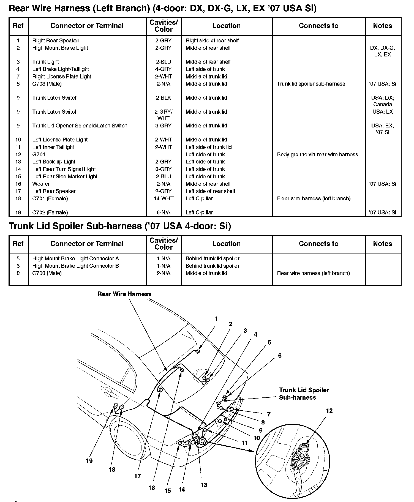

Operation CHARM
: Car repair manuals for everyone.
Home
>>
Honda
>>
2007
>>
Civic Si L4-2.0L
>>
Repair and Diagnosis
>>
Locations
>>
Harness Locations
>>
Trunk Lid Spoiler Sub-harness ('07 USA 4-door: Si)
Trunk Lid Spoiler Sub-harness ('07 USA 4-door: Si)
Rear Wire Harness (Left Branch) (4-door: DX, DX-G, LX, EX '07 USA Si)/Trunk Lid Spoiler Sub-harness ('07 USA 4-door: Si):
